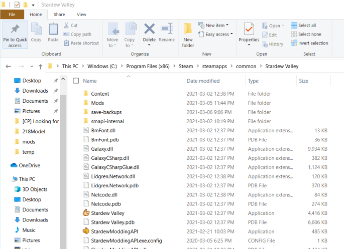

STEP 1
download smapi
If you havent bought Stardew Valley off steam please purchase it and
have it installed and running.
tutorial made with help from
stardew wiki - modding guide

If you havent bought Stardew Valley off steam please purchase it and
have it installed and running.
tutorial made with help from
stardew wiki - modding guide
when launching SMAPI keep your installer open and take note of the the following command, you will need it

open up steam and go to game libraries, right click stardew and click properties > launch options. copy and paste the command in launch options
After you should be able to launch within steam and SMAPI will start up with a terniml/command screen. It will tell you if mods are working or not
find the stardew folder, C drive> Program files (x86)> steam > steamapps > common > Stardew Valley
Find StardewModdingAPI, right click and create a shortcut
Then you can just launch from desktop!